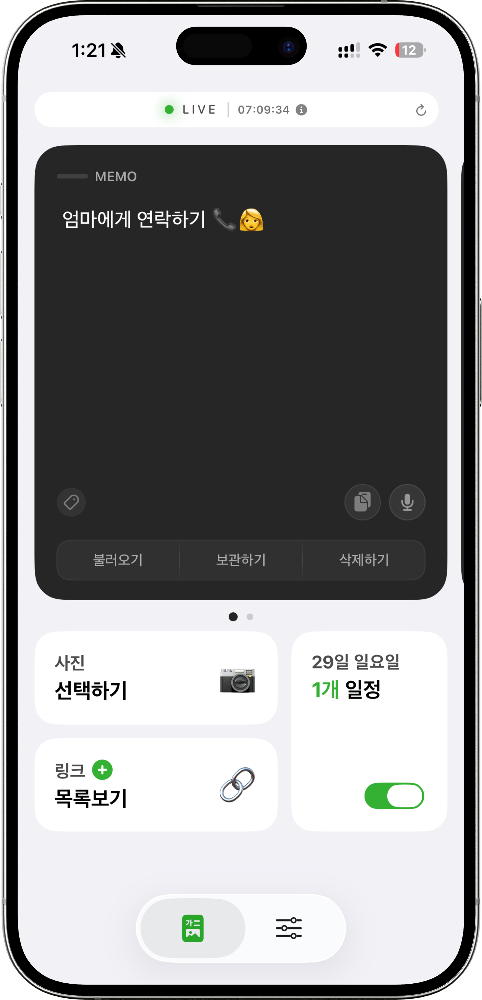
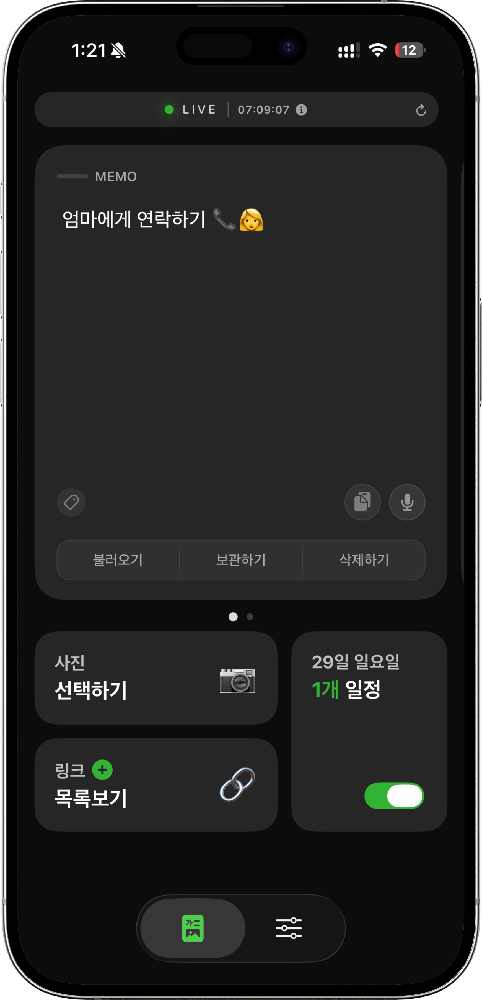

한 줄 기록도 앱 안에 숨기지 않고 잠금화면 앞으로 끌어옵니다.
LOCK SCREEN PRODUCTIVITY
Always visible
Memo · To-do · Link
기억할 건,
앱 안이 아니라
화면 위에 남겨두세요.
LiveNote는 메모, 할 일, 저장한 링크를 잠금화면과 Dynamic Island에 바로 띄워서 생각이 사라지기 전에 다시 보이게 만듭니다. 열기 전에도 이미 보이는 인터페이스, 그 자체를 홈에서 먼저 느끼게 만들었습니다.
바로 처리해야 하는 투두를 시선에서 멀어지지 않게 유지합니다.
공유 시트에서 저장한 링크를 카테고리별로 빠르게 다시 엽니다.
Dark
Light


Dark / Light
같은 구조를 그대로, 테마만 자연스럽게.
메모, 링크, 일정 카드가 어느 화면에서도 익숙한 흐름으로 이어집니다.
BUILT FOR THE MOMENTS BEFORE YOU FORGET
복잡한 생산성 툴보다, 더 먼저 보이는 메모가 필요할 때.
LiveNote는 아이디어를 길게 정리하는 앱보다, 놓치지 않게 붙잡아 두는 앱에 가깝습니다. 그래서 이번 홈도 다운로드 전부터 그 감각이 바로 전달되도록 큰 타이포, 입체적인 레이아웃, 그리고 짧고 명확한 정보 밀도로 새로 설계했습니다.
Remember what matters, before it slips away.
잠금화면에 남겨두는 메모, 투두, 링크. LiveNote의 첫인상을 새 기준으로 정리했습니다.